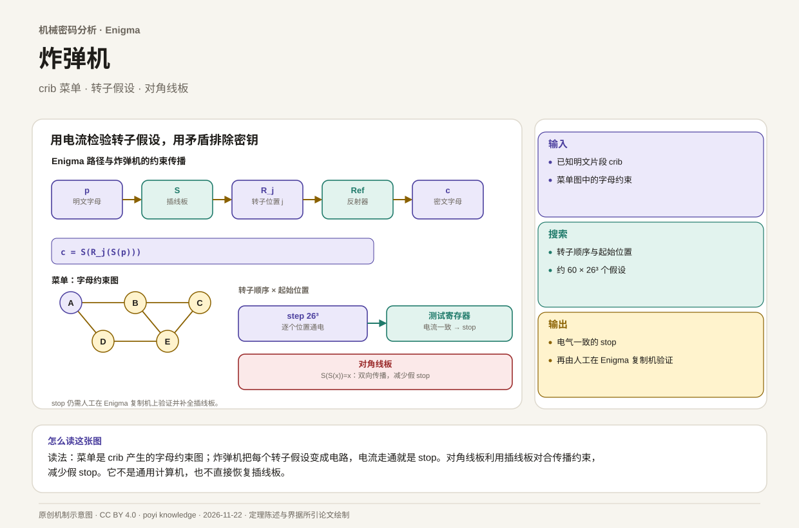
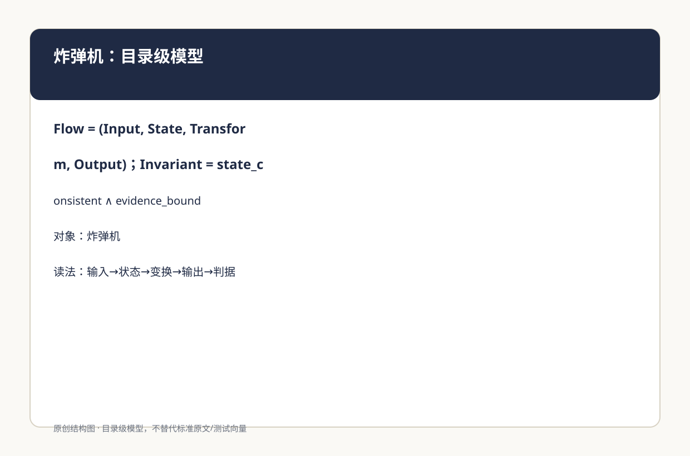
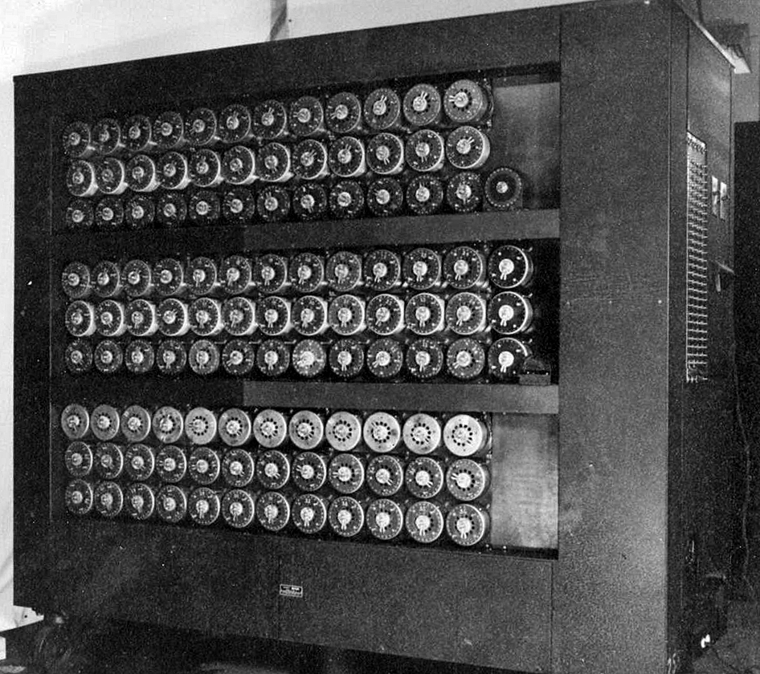

原理与机制
机器：炸弹机（Bombe）。### Enigma 的路径
Enigma 的加密路径可写成 c = S(R_j(S(p)))，其中 p 是明文键位，S 是插线板对合（S(S(x))=x），R_j 是转子组在位置 j 的替换。反射器使路径 reciprocal：同一位置下，p 与 c 的关系对称。对一段 crib，已知 p_j 与 c_j，得到一组未知插线板约束。### 菜单与转子假设
把 crib 中每个位置的字母关系画成图：节点是字母，边是“在该位置经过转子后相连”的约束。一个菜单可以包含多个闭环；闭环越多，约束越强。炸弹机固定一个转子顺序，枚举起始位置；对每个假设，它把菜单中的字母接成电路，并让电流沿转子路径传播。### 测试寄存器与对角线板
若某个位置要求字母 x 同时映射到两个不同的 stecker 伙伴，电路出现矛盾，该假设被排除。若电流走通，测试寄存器触发一个 stop。Welchman 的对角线板把插线板的对称性 S(S(x))=x 直接接入电路：当一条路径推出“x 与 y 相连”，对角线板同时把“y 与 x 相连”传给其他线路，从而在没有闭环或短菜单时也能传播约束，显著减少假 stop。

为什么重要
Enigma 的密钥空间包括转子顺序、起始位置和插线板。直接枚举插线板不可行。炸弹机利用已知 crib 把问题变成“在一个转子假设下，菜单约束是否电气一致”，把大量插线板自由度消去，只留下少量 stop。### 为什么需要对角线板
没有对角线板时，菜单必须靠闭环产生足够约束，短 crib 或不带环的菜单会产生大量假 stop。对角线板利用 stecker 的 reciprocal 性质，把单向约束变成双向传播，让更多菜单可用。### 对机械计算的意义
炸弹机是专用约束求解器：它不执行通用程序，也不存储消息，只用电路并行检查假设。它展示了“用物理结构实现逻辑推导”的工程路线，与后来的电子计算机不同。
应用与实例
阅读这件机器时，抓住三个问题：谁持有或操作它、它把什么结构约束变成可验证的步骤、失败时留下什么可见证据。实物参数只写馆藏、铭文或档案能支持的数值。

边界与攻击面
1.需要已知或高度可信的 crib；crib 错误会生成错误菜单。2.需要正确的转子 wiring、反射器和机器型号；型号变化会改变路径。3.菜单闭环不足时假 stop 增多；对角线板能缓解但不能消除。4.转子顺序与起始位置的搜索仍很大；四转子海军 Enigma 增加复杂度。5.它不直接恢复插线板，也不直接输出明文；stop 必须由人工验证和补全。6.它不是通用计算机，不能执行任意算法；对非 Enigma 或强改装方案不适用。炸弹机是特定历史条件下的专用密码分析机。它的“计算”是电路约束传播，不是现代意义上的可编程计算；把它描述成“第一台计算机”或“自动破解所有 Enigma”都不准确。
历史与背景
波兰密码局在 1930 年代用 bomba 与 Zygalski 穿孔表攻击 Enigma，1939 年把成果交给英国与法国。Turing 在 1939–1940 年设计 British Bombe，用 crib 菜单和转子假设取代波兰方法；Welchman 在 1940 年提出对角线板，使短菜单也能使用。### 工程与战争
Harold Keen 在英国制表机公司完成工程实现。Victory 于 1940 年 3 月服役，Agnus Dei 于 1940 年 8 月加入对角线板。炸弹机与 Banburismus、人工验证和 Enigma 复制机共同组成 Bletchley Park 的破译流水线，而不是单台机器独自完成所有工作。
物证模型与不确定性
炸弹机按输入（尺寸、材质、铭文、结构或操作记录）—结构（可见部件与连接关系）—操作（同时代的使用方式）—证据（馆藏、档案、铭文或技术手册）阅读。来源链包括：Wikipedia search entry for 炸弹机；National Museum of China, Collection Highlights；Museum/collection record for 炸弹机。
原件、复制品、复原模型和照片必须分开；年代、作者、用途、铭文读法有争议时并列保留；没有馆藏或档案支持的参数不写成确定值。

逐步示例与核验
物证模型（不伪造代数公式）
1.输入：炸弹机的尺寸、材质、铭文、结构或操作记录。2.结构：把机器拆成可见部件与连接关系，标出可测量项。3.操作：按同时代的使用方式复述“谁在什么条件下使用它”。4.证据：只写有馆藏、铭文或档案支持的参数；没有来源的数字留空。边界：机器条目回答“它如何工作、如何被使用”，不把机械结构强行写成密钥方程。
参考出处
- Wikipedia search entry for 炸弹机. https://zh.wikipedia.org/w/index.php?search=%E7%82%B8%E5%BC%B9%E6%9C%BA
- National Museum of China, Collection Highlights. https://www.chnmuseum.cn/
- Museum/collection record for 炸弹机. https://www.metmuseum.org/art/collection/search